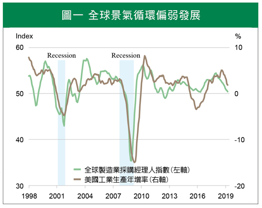
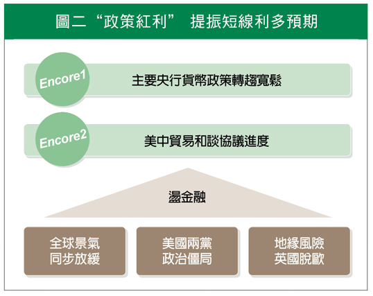
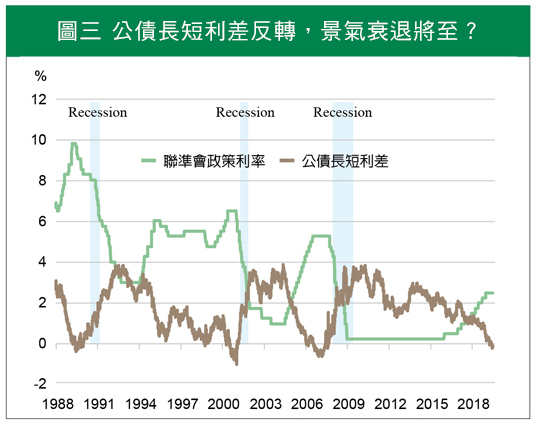
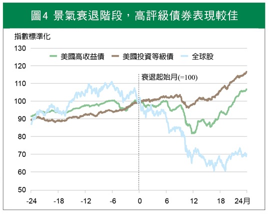

逆風而行下的投資挑戰
金融市場高低起伏，時而激昂、時而低轉。今年以來，全球經濟成長動能趨緩，川普難以捉摸的貿易政策，尤其美中政經戰火延燒的破壞張力，更逼使景氣轉折愈顯。政府央行穩市決心仍有，終曲下的安可聲或再揚，然大趨勢轉變與挑戰，投資心態宜以風險控管為重，加強資產防禦性保護，運用避險策略以抗波動，方能顧守財富持盈保泰的安全之局。
全球景氣軟著陸或硬著陸？
全球景氣持續放緩，基本面數據不容樂觀，經濟領先指標包括企業資本支出及採購經理人指數趨勢明顯下滑。5月全球製造業景氣正式陷入萎縮，PMI下降至49.8跌破景氣榮枯線50之下，並創6年來新低。其中就業尚穩，新訂單生產及供應商交貨則顯下降，存貨增加，新增出口訂單亦下降，未來恐將進一步影響企業雇用及消費需求 (見圖1)。
全球貿易活動明顯下滑，尤其出口至中國佔比高的澳洲、東北亞及巴西等國愈顯。關稅上揚加重企業成本負擔，脫歐進程風險未定，企業對後續景氣看法更為保守，再再警示景氣可能硬著陸的衰退機率上升。

註：兩者皆取3個月移動平均，景氣衰退參考美國NBER定義Recession時期。
資料來源：Bloomberg，NBER
多頭終曲下的安可聲
多頭終曲響起，安可聲之一將來自美中貿易政策衝突-協商-推進。若中國對外循序開放，川普面對2020選戰前的身段稍軟，只要雙方願意釋出和解意向，都將帶領經濟及金融市場出現反彈機會(見圖2)。更實際預期是，因應保護主義升高、關稅壁壘高築，企業轉型及成本壓力將更挑戰，市場不確定性恐將延續。
安可聲之二，主要央行貨幣政策轉趨寬鬆，特別是聯準會降息預期升高。
通膨溫和，各國央行頻頻論述成長風險擔憂，今年亞洲國家及紐、澳央行紛紛再啟降息，歐洲央行甚再延後維持寬鬆預期至2020年中之後。預期聯準會謹慎中性偏鴿，下一步政策將往降息可能。
全球央行降息政策的想像，提振市場信心與流動性，但能否當真營造出成長的持續性？過去公債長短期利差反轉，聯準會開啟降息循環後，如同宣告景氣衰退將至。目前公債長短利差反轉擴大，也再顯示景氣疑慮(見圖3)。

資料來源：國泰世華銀行投研團隊

註：長短利差為美國10年期公債殖利率減3個月國庫券利率，景氣衰退參考美國NBER定義Recession時期。
資料來源：Bloomberg
景氣逆風的投資挑戰與機會
以過去長短利差領先恐慌指數VIX的反向趨勢，未來數月應提防波動突升。面對景氣逆風挑戰，建議心態宜以風險控管為重，加強資產保護的避險策略以抗波動。
(1)增持防禦性債券
央行降息預期升高，預將引導美債利率偏下趨勢。景氣逆風的挑戰，股市波動加劇，企業獲利動能趨緩，愈差信評的債券利差將愈擴大。宜稍減風險性債券，增持公債及投資級債券布局，防患未然為可能的經濟衰退預先準備(見圖4)。
(2)加強避險策略以抗波動
景氣收縮期的投資核心，除了「債優於股」防禦配置，更可於市場動盪時，加入避險資產以降低波動。觀察過去公債、日圓、黃金與美元於VIX上升時，呈現正向關係，面對市場震盪加大之際，透過多元配置加強避險資產比重，將有助於抵銷部份風險，或反向增加收益的機會。

註：取2001年及2007年景氣衰退期間指數平均表現，起始月以美國NBER定義Recession期間首月。
資料來源：Bloomberg
【揭露事項與免責聲明】
本報告為國泰世華銀行（下稱“本公司”）提供尊貴理財客戶之參考資料，並非針對特定客戶所作的投資建議，且在本報告撰寫過程中，並未考量讀者個別的財務狀況與需求，故本報告所提供的資訊無法適用於所有讀者。
本報告係根據本公司所取得的資訊加以彙集及研究分析，本公司並不保證各項資訊之完整性及正確性。本報告中所提出之意見係為本報告出版當時的意見，邇後相關資訊或意見若有變更，本公司將不會另行通知。本公司亦無義務持續更新本報告之內容或追蹤研究本報告所涵蓋之主題。本報告中提及的標的價格、價值及收益隨時可能因各種本公司無法控制之政治、經濟、市場等因素而產生變化。本報告中之各項預測，均係基於對目前所得資訊作合理假設下所完成，所以並不必然實現。本報告不得視為買賣有價證券或其他金融商品的要約或要約之引誘。
國泰金融集團（下稱“本集團”）所屬各公司可能個別基於特定目的且針對特定人士出具研究報告、提供口頭或書面的市場看法或投資建議（下稱“提供資訊”），鑑於提供資訊之單位、時間、對象及目的不同，本報告與本集團其他單位所提供資訊可能有不一致或相牴觸之情事；本集團所屬公司從事各項金融業務，包括但不限於銀行、保險、證券經紀、承銷、自有資金投資、資產管理、證券投資信託等。本集團各公司對於本報告所涵蓋之標的可能有投資或其他業務往來關係，各公司從事交易之方向亦可能與本報告不一致，讀者應審慎評估自身投資風險，自行決定投資方針，不應以前述不一致或相抵觸為由，主張本公司或本集團其他成員有侵害讀者權益之情事。